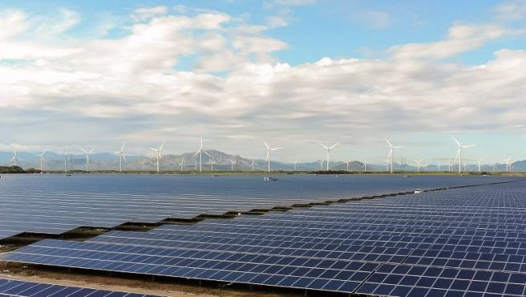

Noticías
El MIT tiene una solución para limpiar las placas solares de la arena en general y el polvo que genera la calima
Se trata de un gran electrodo que aporta carga eléctrica a las particulas con el fin de que reaccionen y se alejen de la superficie del panel.
En resumen, este invento convierte a la suciedad en imanes del mismo grupo que se repelen. El objetivo final es minimizar los costes del mantenimiento y hacer la limieza de los paneles solares se haga con mayor regularidad.
Ultímos Blogposts

Ucrania utiliza un sistema de reconocimiento facial para enumerar sus bajas e identificar a los soldados rusos
Hoan Ton-That, presidente ejecutivo de la compañía, ha detallado para el medio de comunicación que la colaboración entre la defensa ucraniana y Clearview empezó justo después de los primeros bombardeos. Con respecto a la tecnología que están usando, el asesor de la startup, Lee Wolosky, considera que permitirá que las autoridades puedan investigar a las personas desde sus puestos de control.
Corte de cables submarinos, destrucción de infraestructuras de Internet, bloqueo a las telecos... ¿puede Rusia aislar virtualmente a Ucrania?
se han producido interrupciones generalizadas en la conexión a la red en Mariupol, Sumy y otras regiones del país, tras un aumento en las campañas de bombardeos y lanzamiento de cohetes por parte de las unidades rusas. El portal también informó de cortes de Internet en otras ciudades importantes de Ucrania, como Kiev y Kharkiv.
Así serían Shakespeare o la Mona Lisa en la actualidad: esta inteligencia artificial los devuelve a la vida
Diao accede a un banco de imágenes para buscar una fotografía de una persona aleatoria que se parezca al supuesto doble. En el momento que encuentra la imagen adecuada, da paso al proceso de creación tecnológico.
Esta batería utiliza calcio en vez de litio y podría ofrecer más autonomía a los coches eléctricos
Las baterías más utilizadas actualmente son las de iones de litio, puesto que, de momento, han parecido la mejor opción para los dispositivos electrónicos portátiles. No obstante, la extracción de este material es cara y su manipulación puede resultar peligrosa, por lo tanto, su reutilización y reciclaje es una tarea muy compleja.
Hito tecnológico en el espacio de la mano de una empresa española: logran encender por primera vez un motor para cohetes en 'V'
Hasta ahora, los Elon Musk y Jeff Bezos del mundo nos tienen acostumbrados a ver motores de tipo ‘campana’, es decir, que dirigen los gases que propulsan el cohete hacia el espacio con una tobera cerrada.
Megaconstrucciones: así son los cables submarinos que llevan energía a miles de kilómetros de distancia
Un gran cable submarino de alta tensión llevará la electricidad capturada en los desiertos del norte de Australia al sureste asiático para 2027. Marruecos dispondrá a finales de esta década de una planta solar y eólica de 10,5 GW, energía que será enviada directamente a Reino Unido mediante un conducto que bordee las costas de España y Portugal.